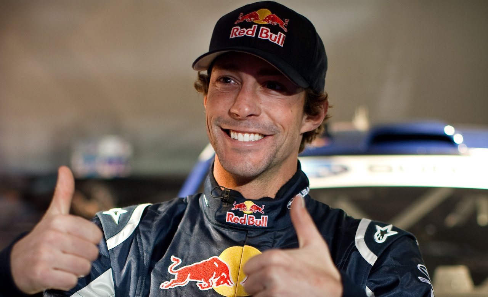
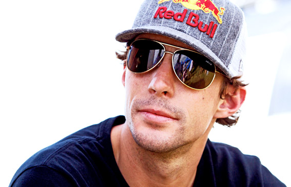
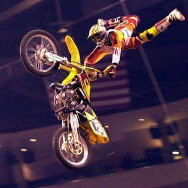
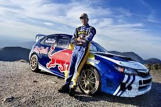
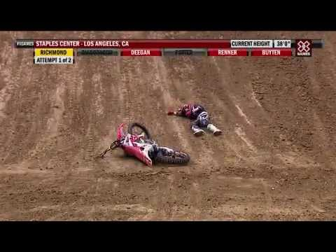
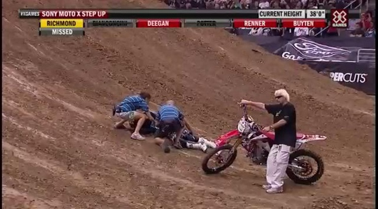
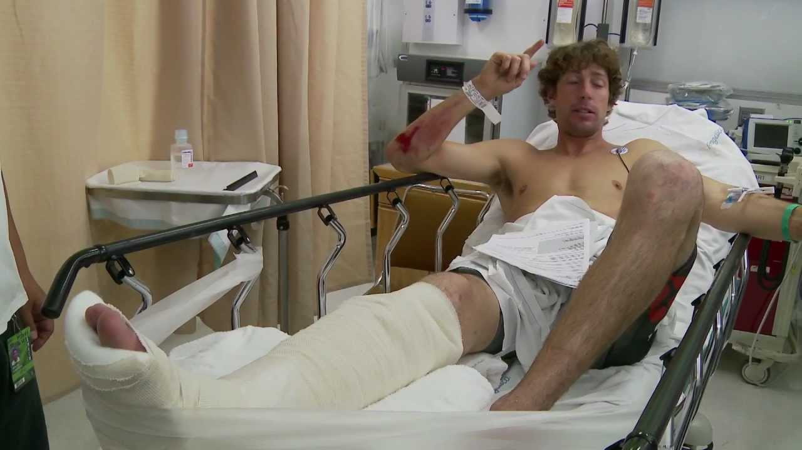

Biografia
Travis Pastrana nació el 8 de Octubre de 1983 en Anapolis, Maryland.
Travis comenzó a andar en motocicleta cuando el tenía tan sólo 4 años de edad. Su primer moto fue una rápida Honda Z-50 la cual su padre le mostró como andar en ella cerca de su casa en Maryland. Desde entonces, el vino a ser uno de los más atrevidos y entrenados conductores de motocross en el planeta. Cuadno tenía 14 años, Travis vino a ser el más jóven en el Campeonato Mundial de Estilo Libre en el Motocross. Un año después, se llevó a casa la medalla de oro en ambos, los X Games y los Gravity Games. Los logros de Travis como motociclista de estilo libre de motocross , tuvo que hacer su marca en otros varios deportes. Encima de ganar el el premio AMA como Novato del Año en el 2000, el también ganó dos campeonatos de supercross – El campeonato Nacional del AMA 125cc en el 2000 y el 125cc en el Campeonato Supercross de la Costa Este en 2001. En el 2003, Travis empezó su a correr carreras de rally. Él ganó la medalla de oro en la competencia de Rally Car del 2006 para los X Games.
Travis Pastrana sabe que es uno de los que vienen con los trucos más innovadores y peligrosos alrededor del mundo. Travis firma con un movimiento que es un gancho agarrado de la defensa como superman y el indio en el aire. Si piensas que esto es difícil de decir, es todavía más complicado pensar al caer a la tierra con varios huesos rotos. Mientras Travis esta en medio del aire, haciendo una tijera con sus piernas hacia atrás. Él mantiene una mano en el manubrio mientras que la otra mano sostiene la defensa posterior. En el los X Games del 2006, Travis fue el primer motociclista de tierra en hacer un doble hacia atraz en una
competencia. Él fue directo a ganar
la medalla de oro en el Moto X Best Trick haciendo un 98.60 fuera de un posible 100.
Travis Pistrana mide 6'2" y pesa 195 librass
Travis Pistrana en su tiempo libre juega golf , anda en su bote y monta bicileta de montaña.
Travis Pastrana mantuvo 3.9 puntos en promedio en la secundaria. Él se graduó a la edad de 15 añso antes de enrolarse en la Universidad de Maryland.
Trasvis Pastrana estuvo en el programa de Punk´d de MTV.
Travis Pastrana ha tenido varias lesiones durante estos años. Él tuvo un esguince en el tobillo, se ha roto varios huesos y ha tenido asombrosamente 19 cirugías.
Travis Pastrana ha aparecido en
docenas de DVD´s de motocross y supercross. "Mi fuerza y mi debilidad son lo mismo: Yo tengo buena voluntad y estupidamente tengo que tratar lo que sea. Si pienso que es remotamente posible, lo hago”.


.jpg)
Karen Garrido
Logros
Pastrana ganó el Campeonato de la AMA de Motocross 125cc en el año 2000. En 2002 ascendió a la clase principal, 250 cc, donde nunca logró ganar ninguna carrera final. Simultáneamente, Pastrana compitió en motocross estilo libre, donde intentó realizar varios trucos inéditos como el doble backflip, el 360 y el rodeo 720. Desde 1999 hasta 2006, compitió regularmente en las distintas pruebas de dicha modalidad en los X Games, donde cosechó siete medallas de oro en freestyle y un total de 12 medallas. También venció en cuatro eventos de Red Bull X-Fighters entre 2004 y 2007.
En 2005 añadió el rally a su agenda al competir en el campeonato Rally America. Ganó ese campeonato cuatro veces consecutivas desde 2006 hasta 2009 como piloto oficial de Subaru, obteniendo 17 triunfos. También participó de los eventos de Rally y Super Rally de los X Games desde 2006, donde logró dos medallas de oro y dos de plata, y disputó siete ediciones de la Carrera de Campeones. En 2007 y 2008 participó en algunas fechas del Campeonato Mundial de Rally de Automóviles de Producción.
Pastrana pasó a los stock cars en 2011, al disputar tres carreras de la NASCAR East Series. En 2012 debutó en la NASCAR Nationwide Series.


Karen Garrido
Lesiones
Las lesiones le han sacado a menudo de los circuitos durante semanas o meses. Su informe médico incluye conmociones cerebrales múltiples, la parte posterior del cráneo rota, varios hombros dislocados y los problemas severos de la rodilla debido a la degeneración del cartílago.
En 1999 en el acontecimiento del Triple Crown en Lake Havasu, a la edad de 16 años, realizó un salto de 36,5 metros y no alcanzó la altura suficiente. En la caída, se le separó la espina dorsal de la pelvis, acto por el cual esa lesión está registrada en los libros médicos. La caída lo dejó en coma dos semanas y en silla de ruedas tres meses. "Estuve dentro y fuera del sentido cerca de tres días y me realizaron seis transfusiones de sangre", dijo posteriormente Pastrana.
También comenta que, según los médicos, solamente tres personas en los Estados Unidos han vivido a esta clase de lesión. "No recuerdo la mayor parte de las lesiones, pero han sido muchas". Su lista de lesiones incluye: la espina dorsal dislocada, en su rodilla izquierda se le ha rasgado su ACL, PCL, LCL, MCL, su menisco, roto la tibia y peroné, se ha operado con cirugía en su muñeca izquierda dos veces, del pulgar izquierdo una vez, dos cirugías en la espalda, una en su codo derecho, nueve en su rodilla izquierda, seis en la rodilla derecha, una cirugía en el hombro.



Karen Garrido